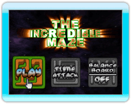

5 |
Pour Débuter
|
 |

Bienvenue dans l'Incroyable Labyrinthe! Vous allez être amené à jouer à travers de nombreux niveaux remplis de toutes sortes d'obstacles et de défis. Trop facile ? Réfléchissez bien ! Des Obstacles, des tremplins, des téléporteurs, des murs manquants et ce n'est que le début -- Gardez votre main bien stable sinon gare à la chute !
Menu Principal
Jouer (Play) : Choisir l'option «Play» vous permettra de commencer immédiatement votre partie à travers le labyrinthe. Si c'est la première fois que vous jouez, vous remarquerez que la seule option disponible sera «Play» dans le niveau appelé "Starting Off". Au fur et à mesure que vous terminerez des niveaux, ils seront débloqués pour les prochaines parties.
Contre-la-Montre (Time Attack) : Ce mode sera débloqué une fois que vous aurez terminé tous les labyrinthes en mode «Play». En mode «Time Attack», vous devez compléter tous les labyrinthes dans un temps limité. Essayez d'être le plus fort en terminant avec le moins de tentatives possibles pour obtenir un «High Score».
Wii Balance Board : Si vous possédez une Wii Balance Board, vous pouvez jouer à "L'Incroyable Labyrinthe" en répartissant votre poids dans différentes directions pour diriger la balle au lieu d'utiliser la Wii Remote. Cette option permet d'activer ou de désactiver cette fonction avant le début d'une partie. |
 |
 |
 |